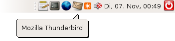

AllTray
Dieser Artikel wurde für die folgenden Ubuntu-Versionen getestet:
Ubuntu 14.04 Trusty Tahr
Zum Verständnis dieses Artikels sind folgende Seiten hilfreich:
Alltray  ist eine Anwendung, um Programme in das Benachrichtigungsfeld oder Traybar minimieren zu können, die diese Funktion nicht selbst bieten. So bietet sich das Programm an, um z.B. E-Mail-Programme wie Thunderbird und Evolution, die ja meistens laufen, in den Tray zu minimieren. Alltray sollte mit allen Desktop-Umgebungen und Fenstermanagern laufen, die sich an die Standards von Freedesktop halten. Das sind GNOME, KDE, Xfce, LXDE, Fluxbox und WindowMaker.
ist eine Anwendung, um Programme in das Benachrichtigungsfeld oder Traybar minimieren zu können, die diese Funktion nicht selbst bieten. So bietet sich das Programm an, um z.B. E-Mail-Programme wie Thunderbird und Evolution, die ja meistens laufen, in den Tray zu minimieren. Alltray sollte mit allen Desktop-Umgebungen und Fenstermanagern laufen, die sich an die Standards von Freedesktop halten. Das sind GNOME, KDE, Xfce, LXDE, Fluxbox und WindowMaker.
Es sind inzwischen einige Fälle bekannt, wo AllTray nicht wie erwartet funktioniert. Hat man Probleme mit AllTray, kann man als Alternative das Programm KDocker ausprobieren, das ebenfalls in den offiziellen Paketquellen als kdocker enthalten ist. Es leistet im Prinzip das Gleiche wie AllTray, variiert aber leicht in der Funktionsweise. Dies sollte man bei einem eventuellen Umstieg auf KDocker berücksichtigen.

Installation¶
AllTray kann direkt aus den offiziellen Paketquellen über das folgende Paket installiert [1] werden:
alltray (universe)
 mit apturl
mit apturl
Paketliste zum Kopieren:
sudo apt-get install alltray
sudo aptitude install alltray
Nach der Installation findet sich unter
Anwendungen -> Zubehör -> AllTray
ein Eintrag im Anwendungsmenü, über den sich AllTray starten lässt.
Selbst Kompilieren¶
Man kann das Programm auch selber kompilieren. Dies ist im Falle von AllTray nicht schwer. Gerade AllTray ist ein ideales Übungsbeispiel, weil es ein kleines Programm mit nur wenigen Abhängigkeiten ist. Damit man das Programm erfolgreich kompilieren kann, ist die Installation der beiden Bibliotheken
libgtk2.0-dev
libgconf2-dev
mit apturl
Paketliste zum Kopieren:
sudo apt-get install libgtk2.0-dev libgconf2-dev
sudo aptitude install libgtk2.0-dev libgconf2-dev
notwendig. Anschließend kann man die Quellen von AllTray herunterladen und kompilieren [2].
Anwendung¶
Allgemein¶
Ist AllTray kompiliert und installiert, so kann man Anwendungen bei ihrem Start in den Tray verbannen. Dazu öffnet man ein Terminal [3] und stellt einfach ein "alltray" vor den eigentlichen Befehl.
# Allgemein
alltray PROGRAMM {OPTIONEN} &
# Beispiel
alltray thunderbird & Das Programm erscheint nun nur im Tray. Mit einem Doppelklick auf das Trayicon holt man das Fenster in den Vordergrund, mit einem Klick auf den Schließen-Button minimiert man es wieder in den Tray.
Optionen¶
Des Weiteren kann man Alltray noch Optionen mit auf den Weg geben. Die interessantesten sind:
| Optionen | |
| Parameter | Zweck |
-s, --show | Startet die Anwendung nicht sofort minimiert. |
-stask, --skip-taskbar | Die Anwendung ist in der Taskleiste nie sichtbar. |
-na, --no-alltray | nur Ubuntu 10.04: Bewirkt, dass kein "(Alltray)" in den Fenstertitel geschrieben wird. |
Weitere Informationen zu den Optionen liefert die Manpage von alltray.
Anwendungsmenüs¶
AllTray zu nutzen, um Programme aus dem Terminal zu starten, ist nicht sehr komfortabel. Die volle Funktion spielt AllTray nur aus, wenn man die Einträge der Programme, die AllTray in die Traybar verbannen soll, ändert. Daher sollte man sich die Zeit nehmen und mit dem Menü-Editor [4] der jeweiligen Desktop-Umgebung die Einträge ändern.
Beim Menüeditor von GNOME reicht es aus, in den Eigenschaften bzw. der Befehlszeile das Wort alltray davor setzen.
Minimierter Autostart¶
Will man Programme schon beim Systemstart automatisch in den Tray "verbannen", so sind einige Besonderheiten zu beachten. Der normale Weg per Autostart funktioniert dann nämlich nicht, da AllTray kein Session Management unterstützt und so immer nur eine Instanz von AllTray per Autostart ausgeführt werden kann.
Man muss sich stattdessen mit einem Shell-Skript behelfen, das man beim Start automatisch ausführen lässt. In dieses Skript trägt man untereinander alle AllTray-Befehle ein, die beim Systemstart abgearbeitet werden sollen. Ein Beispiel für die Bash würde dann etwa so aussehen:
1 2 3 4 5 6 | #!/bin/bash alltray gaim & alltray firefox & alltray thunderbird & # usw., für alle Programme, die per AllTray gestartet werden sollen exit 0 |
Anschließend muss man die Datei noch ausführbar machen:
chmod +x NAME-DES-SKRIPTS
Dann bindet man das Skript in die Autostart-Funktion der jeweiligen Desktop-Umgebung ein. Eine detailliertere Anleitung findet sich auch auf Launchpad .
Problembehebung¶
In einigen Anwendungen, wie zum Beispiel Thunderbird, kommt es unter GNOME 2 bei der Verwendung von AllTray im Kombination mit Compiz zu Problemen mit "Drag'n'Drop". Abhilfe schafft das Deaktivieren der Desktop-Effekte bzw. ein Wechsel zu Metacity.
- Erstellt mit Inyoka
-
 2004 – 2017 ubuntuusers.de • Einige Rechte vorbehalten
2004 – 2017 ubuntuusers.de • Einige Rechte vorbehalten
Lizenz • Kontakt • Datenschutz • Impressum • Serverstatus -
Serverhousing gespendet von